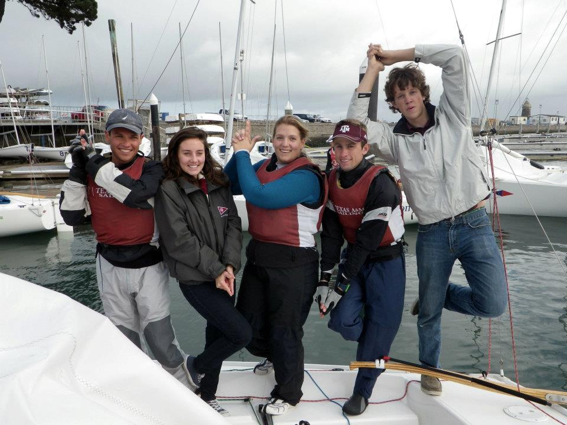

Your donation helps us maintain our fleet, provide training programs, and grow the sport of sailing at Texas A&M University.
Keep our boats in top condition for safe and competitive sailing experiences.
Provide comprehensive sailing education for beginners and advanced sailors.
Fund travel and equipment for regional and national regattas.
Expand our sailing community and make the sport accessible to more students.
You will be redirected to the secure Texas A&M Foundation donation portal where you can make your contribution to the Aggie Sailing Team.